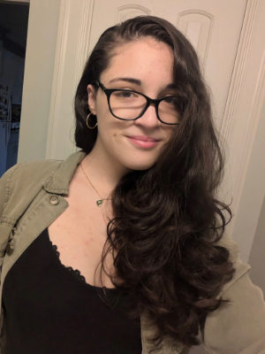

Data scientist at UMass Amherst with an interest in technical and professional writing.
I am a Senior at UMass graduating with the class of 2026. At UMass, I study Informatics to become a data scientist, and I am minoring in English to be able to adeptly communicate tehcnical concepts in an understandable way.
I also work at UMass Amherst's central IT help desk as a consultant. This is my fourth year working at UMass IT, and I have been Student Team Lead there for about a year.
I live in Downtown Amherst in a small apartment with my partner and two cats. In my free time, I like to read, play video games, create art, and rock climb. After I graduate, I am looking forward to moving back to Boston where I grew up, where I am hoping to be able to find a job working in data science, data communications, or IT.